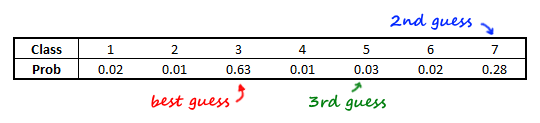
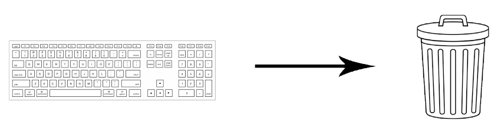

A brief dive into the H2O machine learning framework
Published
August 23, 2017
Note: I originally wrote this post for the Mango Solutions blog, and they have kindly allowed me to repost it here alongside the rest of my work! You can find the original post here.
A quick disclaimer
This post isn’t called H2O.ai: Going for the 100m freestyle world record. I’m not trying to win a Kaggle competition. I’m not carrying out detailed, highly-controlled benchmarking tests. I’m not, in fact, claiming to be doing anything particularly useful at all. This is just me, just playing around with some code, just for the fun of it.
H-to-O dot what?
“I’ve never even heard of that,” you might be thinking. Well, don’t worry - neither had I until very recently. Let’s start by having a look at their website.
H2O is the world’s leading open source deep learning platform. H2O is used by over 100,000 data scientists and more than 10,000 organizations around the world. - www.h2o.ai
In other words, H2O - which has been around since way back in 2011 - is a widely-used platform for carrying out machine learning and data analysis, which is optimised for working wth large datasets.
The primary focus really is on the machine learning. There is a wide selection of algorithms to choose from, ranging from random forests and neural networks to PCA and Word2vec (a full list can be found in the documentation).
H2O is a language in its own right, although under the hood it is largely written in Java. This makes it incredibly flexible: you can use it with R or Python, link into Spark and Hadoop, or use the built-in “Flow” interface. I’ll cover some of this functionality in the rest of this post.
Demo: Random Forest
Let’s test out a couple of H2O’s algorithms. To start with, we’ll use a random forest for a classification task.
I’m going to use the “Covertype” dataset from the UCI ML datasets archive. This dataset contains nearly 600000 records representing different locations in the USA. The challenge is to predict tree cover type (spruce/fir, pine, aspen etc.) using only cartographic variables (elevation, slope, soil type etc.).
So effectively, the plan is to use a random forest to classify… yep, random forests.
Data import
Without further ado, let’s get the data into R and have a look at it. Note: for now, I’m going to be using the R interface to H2O, but later we’ll try out the Flow interface too.
# Load some packages for data manipulationlibrary(dplyr)library(readr)# Data from http://archive.ics.uci.edu/ml/datasets/Covertypecovtype <-read_csv("~/H2O_exploration/covtype.csv", col_names =FALSE) %>%# Convert some columns to factormutate_at(11:55, funs(factor(.)))# Have a look at what we've gotstr(covtype)
An explanation of the dataset is available on the download page. The CSV file itself doesn’t contain any column names, and the ones R creates for us aren’t particularly helpful; but actually, it won’t really matter. We only need to take note of a couple of things:
The first 10 columns are numeric variables representing various geographical aspects of the location in question. Average yearly rainfall, degree of slope, number of minutes of sunlight between 3 and 4 o’clock on the second Wednesday of August during a leap year, and so on.
Columns 11-14 are binary categorical variables signalling whether the forest is within one of four “Wilderness Areas”. So if the forest is in one of these areas, then the column representing that area will contain a 1; otherwise each column will contain a 0.
Columns 15-54 are binary categorical variables representing soil type: i.e. Column 11 is storing the answer to “is this area Soil Type 1?”, where the answers “yes” or “no” are represented by 1 or 0 respectively. So each record has a 1 in precisely one of these columns, and 0 in the other columns.
Column 55 is the important one: it’s the label indicating what the cover type actually is. This is the target variable which we’re going to try to predict! There are 7 different possible labels, representing spruce/fir, aspen, Ponderosa pine etc.
We converted columns 11-55 to factors when we imported the data, so we can crack on with some machine learning right away.
The h2o R package
H2O can be downloaded on its own, but if you’re using it with R it’s easier to install the h2o package (which is available on CRAN). You’ll also need to have Java installed.
Then you can go ahead and load the package into R, and before you can do anything else you’ll need to get an H2O cluster up and running using h2o.init().
library(h2o)h2o.init()
## Connection successful!
##
## R is connected to the H2O cluster:
## H2O cluster uptime: 2 hours 54 minutes
## H2O cluster version: 3.10.5.3
## H2O cluster version age: 1 month and 15 days
## H2O cluster name: H2O_started_from_R_ojones_mlh028
## H2O cluster total nodes: 1
## H2O cluster total memory: 1.50 GB
## H2O cluster total cores: 4
## H2O cluster allowed cores: 4
## H2O cluster healthy: TRUE
## H2O Connection ip: localhost
## H2O Connection port: 54321
## H2O Connection proxy: NA
## H2O Internal Security: FALSE
## R Version: R version 3.4.0 (2017-04-21)
This shows us some information about the session we’ve just created. Notice the cluster is running on a Java Virtual Machine (JVM), and in my case I’m running on 1 node (my laptop) and 4 cores. If you’re lucky enough to have a larger setup then you can edit these settings to suit you.
The only function we’ve used so far gives a good indication of how the package works: the general form of functions is h2o.(…), and more often than not the is replaced by what you would guess you should put there. At first, we want to initialise a cluster, so we use h2o.init. The function names tend to be quite intuitive, so after you’ve seen them once or twice it’s very easy to remember them.
On with the show! Recall that our covtype dataset is currently sitting happily in an R dataframe. However, we’re only accessing our H2O cluster through R (remember it’s running behind the scenes on a JVM), so we need to pass the data on to the cluster in a format it can work with.
Fortunately this is very easy: as.h2o converts a dataframe to an “H2OFrame”. In the R session, it’s stored as an environment, but actually this is just a pointer to the data structure which has been created by H2O.
rwet <- as.h2o(covtype)
We’re going to want to assess the performance of our random forest once we’ve trained it, so we’ll split our data into training and test sets using h2o.splitFrame - intuitive names, remember?
The observations are randomly divided into sets according to the ratios specfied. Our split is 75:25, but ratios can be a vector too: if, for example, you wanted to create a cross-validation set too, then you could specify ratios = c(0.6, 0.2) to get a 60:20:20 split.
Now we can train our classifier. We want a random forest, so we use - you guessed it - h2o.randomForest. Remember that the label for each observation is in the 55th column, so we set the target variable y to 55. Our training dataframe is the first set from our split data, and then you can include a whole load of other optional parameters. I’m not going to go into huge detail here; I’m just going to set the number of trees to train, and the number of folds for cross-validation. But if you’re super keen on making sure your trees are balanced or on fiddling around with per-class sample rates, then rest assured that you can do so. If you don’t think balancing trees will do your back any good then fear not: H2O does a pretty good job of using sensible defaults for any parameters you don’t explicitly include.
You might argue that one tree a forest doth not make, and I would agree with you. This is just a demonstration of the syntax - we’ll make a proper forest in a minute!
Once the model has finished training, we can calculate some useful performance metrics using h2o.performance - I’m passing in the model we’ve just trained, and the second part of our dataset (which is our test set).
This gives us numeric metrics such as mean square error; a confusion matrix of predicted vs actual classes, with per-class error rates calculated for us; and a “hit ratio table”.
For each observation, the classifier works out how likely it is that the observation belongs to each of the 7 classes. This allows it to make a “best guess” at the actual class (which is the “prediction”), but it can also make a second-best guess, a third-best, and so on.

The (k)th row of the hit ratio table gives us the proportion of observations which are correctly classified within the top (k) guesses the classifier makes. So (k=1) is the accuracy of the classifier - i.e. the proportion of observations which are correctly predicted - (k=2) is the proportion which are within the first two guesses the classifier makes, and so on. The actual class will definitely be in the top 7 guesses (there are only 7 possible classes!) so for (k=7) the hit ratio is 100%.
If your classification task is binomial then you can calculate many other relevant metrics (precision, F1 score, false negative rate etc.) using the selection of h2o.metric functions which are available.
We’ll come back to this random forest soon, but first I’m going to have a little look at H2O Flow.
H2O Flow
H2O Flow is H2O’s own browser-based interface. Getting started is easy:
Initialise an H2O cluster (e.g. by running h2o.init() in R)
Go to localhost:54321 in browser
Unplug keyboard
Honestly. You can do that. You don’t need it.

Flow is based on a notebook-style layout. Code is added to cells, which are then run in sequence. You can write raw H2O code yourself, but it’s much easier to use the drop-down menus and buttons and let Flow compile the code for you.
The really nice thing about Flow is that it allows you to see exactly what your options are at each stage. When you finish one operation, it gives you a selection of things which you might want to do next. When you are able to change options or parameters, it lists them all out for you so you can see which ones are available and which ones you might want to change.
If you like writing code and you already know exactly what you’re planning on doing, then the R interface is quicker to use and much more concise. But I’d encourage you to play around with Flow for a while at some point, because you’ll probably discover something that you hadn’t used before.
Also, it’s worth clarifying that when you’re using H2O, your data is always on your cluster (in my case, my laptop, but it could be your big server in the basement). Flow uses the browser for display, but it’s not pinging a server - it’s all hosted locally (hence localhost!). So you don’t need to worry about data being intercepted or anything.
Comparison: randomForest and caret
Going back to our random-forest random forest from earlier, we can set up the R equivalent of the H2O forest using the randomForest and caret packages. Specifically, caret is great for dealing with the ML process as a whole - splitting data, managing cross-validation etc. - and in this case it uses randomForest to actually train a classifier.
I’m putting the code for this into a little function called do_rf: it just records the time taken to set up and train the forest, and then returns this time along with performance metrics for the forest.
do_rf <-function(ntrees, nfolds) {# Record time at start start <-Sys.time()# Make/train the forestlibrary(caret)set.seed(820) caret_split <-createDataPartition(covtype$X55, p =0.75, list =FALSE, times =1) rf <-train(X55 ~ ., data = covtype[caret_split, ],trControl =trainControl(method ="cv", number =2),method ="rf", ntree = ntrees)# Stop the clock exec_time <-Sys.time() - start# Make predictions preds <-predict(rf, covtype[-caret_split, ])# Return runtime and performance metricslist(exec_time, confusionMatrix(preds, covtype$X55[-caret_split]))}
Technically, cross-validation isn’t really necessary for a random forest, since the algorithm isn’t prone to overfitting. However, it’s a useful example to show how the entire ML workflow is integrated into H2O (using cross-validation is as simple as setting the nfolds parameter), whereas in R you really need to use a “meta”-ML package such as caret or mlr to set up ML projects.
Let’s run the do_rf function and see what happens. We’ll use 10 trees and 2-fold cross-validation.
Performance is reasonably good - according to the UCI website a simple backprop neural net achieved only 70% accuracy on this dataset, so we’re well above that.
We can compare this with the performance of the H2O forest by writing a similar do_h2o function containing the code from earlier, then running this function and looking at the results.
It turns out that in this case, H2O is faster than R, but the performance is actually worse. In. This. Case. This is not a solid benchmarking test, and of course it would be possible to improve the performance of both of the implementations through some parameter adjustment, but I’m not going to dive into all that. This is just a paddle, remember.
Comparison: sparklyr
Perhaps the best-known ML platform is Apache Spark, and seeing as there’s an R package to interface with it - sparklyr - I thought I’d take a brief tangent in order to try it out.
It turned out I was being a bit optimistic. It took me about 10 minutes to set up the H2O random forest for the first time; it took a few hours and lots of yelling at incomprehensible Java-related error messages before I managed to get compatible versions of Spark and Java configured correctly. In fairness this was probably more my fault than Spark’s…
Once it was finally set up, the ML process was quite similar to H2O (although I must admit that initially I found the syntax a little more difficult to get my head around).
```r library(sparklyr) library(dplyr)
sc <- spark_connect(master = “local”, version = “2.0.0”)
ml_classification_eval(preds, “V55”, “prediction”, “accuracy”)rconsole## [1] 0.8295277<p>At the time of writing there is no facility in <code>sparklyr</code> for cross-validation. Having said that, the Spark MLlib library <em>does</em> include cross-validation, and <code>sparklyr</code> is still under active development, so this is something which may be added in future.</p> <p>Running a <code>do_spark(ntrees = 10)</code> function reveals a faster time but much lower accuracy than either R or H2O, but this isn’t surprising given that we’re not using cross-validation so we’re doing less than half the work.</p> <div id="results-comparison" class="section level4"> <h4>Results comparison</h4> <table> <thead> <tr class="header"> <th align="left"></th> <th align="right">Accuracy</th> <th align="right">Time (mins)</th> </tr> </thead> <tbody> <tr class="odd"> <td align="left"><code>randomForest</code> and <code>caret</code></td> <td align="right">0.960</td> <td align="right">7.8</td> </tr> <tr class="even"> <td align="left"><code>h2o</code></td> <td align="right">0.906</td> <td align="right">4.4</td> </tr> <tr class="odd"> <td align="left"><code>sparklyr</code> <em>(no X-val)</em></td> <td align="right">0.830</td> <td align="right">1.9</td> </tr> </tbody> </table> </div> </div> <div id="conversion-with-rsparkling" class="section level3"> <h3>Conversion with <code>rsparkling</code></h3> <p>If your dataset is already sitting in Spark (or you're accessing it using Spark) and you want to use H2O’s algorithms on it, c’est possible. The <code>rsparkling</code> package allows you to convert a Spark frame to an H2OFrame, which you can then attack with <code>h2o</code>’s functions (e.g. you can take advantage of H2O's cross-validation).</p>r library(rsparkling)
Right, we’ve been talking about random forests for quite a long time now. I’d say we’re certainly in over our knees, and by my definition that means we’re wading, not paddling. So I’m going to move on to a new algorithm and a new dataset.
Demo: Neural nets for MNIST
Time for a real classic - according to Kaggle, the de facto “hello world” dataset of computer vision. The MNIST dataset is a collection of 60000 images of handwritten digits. Each image is 28x28 pixels in size, and is represented by a 28x28 matrix of values representing the intensity of each pixel.
This matrix is then “unrolled”, row by row, into a 784-length vector; and these vectors can be used to train a neural network to classify new images.
nnet
First let’s get our data into R and create a split for training and test sets.
```r library(dplyr) library(caret)
train <- readr::read_csv(“~/H2O_exploration/train.csv”) %>% # Make the label a factor mutate(label = as.factor(label)) %>% # Pixel intensities are currently on 0-255 scale; # rescale on 0-1 by dividing by 255 mutate_if(is.numeric, funs(./255))
set.seed(528491) part <- createDataPartition(1:nrow(train), p = 0.75, list = FALSE)<p>The <code>nnet</code> package comes as part of the standard R installation and can be used to set up a simple feed-forward neural network. Here we’ll use a 25-unit hidden layer, and we’ll stop optimising after 100 iterations if we haven’t already run out of steam by then.</p> <p>As before, we can wrap this code in a little timer function:</p>r library(nnet)
do_rnet <- function() {
start <- Sys.time()
# Predict label based on all other features (i.e. all the pixels)
# We have to set a high MaxNWts to avoid a memory error
rnet <- nnet(label ~ ., data = train, subset = part,
size = 25, maxit = 100, MaxNWts = 20000)
exec_time <- Sys.time() - start
preds <- predict(rnet, train[-part, -1], type = "class")
list(exec_time, confusionMatrix(preds, train$label[-part]))
}
do_rnet()rconsole ## [[1]] ## Time difference of 33.20143 mins ## ## [[2]] ## Confusion Matrix and Statistics ## ## Reference ## Prediction 0 1 2 3 4 5 6 7 8 9 ## 0 977 0 8 7 2 15 9 3 4 3 ## 1 0 1093 5 3 5 1 0 3 11 2 ## 2 4 10 977 17 7 5 11 15 7 3 ## 3 5 7 23 982 5 29 2 8 26 8 ## 4 1 3 7 0 964 1 5 8 2 33 ## 5 8 4 4 19 3 880 14 6 9 7 ## 6 4 0 3 3 11 14 999 1 7 1 ## 7 0 5 7 14 9 4 2 1025 3 20 ## 8 9 8 8 20 2 19 7 6 937 9 ## 9 4 2 3 13 32 11 1 17 7 973 ## ## Overall Statistics ##
## Accuracy : 0.934
## 95% CI : (0.9291, 0.9387) ## [… etc.]<p>The accuracy ain’t much to shout about - the top MNIST classifiers nowadays are well above 99% - but it isn’t too bad for such a small implementation. It takes a little while to get there though.</p> </div> <div id="h2o" class="section level3"> <h3>H2O</h3> <p>Let’s see how H2O’s implementation compares (they follow the relatively recent trend of calling neural networks “deep learning” classifiers). Note that we’re using the same setup here as we did for <code>nnet</code>, i.e. one hidden layer of 25 units, although I couldn’t figure out how to limit the number of steps. Also note that the syntax is almost identical to when we implemented the random forest earlier; we’ve just swapped out <code>randomForest</code> for <code>deeplearning</code>.</p>r do_h2o_net <- function() {
Woah! The accuracy is virtually identical, but we manage it in under 2 minutes, rather than over half an hour.
Just for the sake of it, I also ran a TensorFlow convolutional neural net in Python to see how performance compared. The accuracy was higher than both of the previous implementations and the training process was nearly as fast as H2O had been. However, an upgraded H2O net with two 50-unit hidden layers (as simple as swapping out hidden = 25 for hidden = c(50, 50) in the previous code) surpassed even the convnet, both in terms of accuracy and speed.
Neural nets: results comparison
Accuracy
Time (mins)
nnet
(100 steps, 25 hidden units)
0.934
33.0
H2O deeplearning
(??? steps, 25 hidden units)
0.927
1.8
TensorFlow
(500 steps, 2*conv/relu/FC)
0.950
3.7
H2O deeplearning
(??? steps, 2*50 hidden units)
0.956
2.2
There’s another slightly subtle point here, but it’s a very important one. Notice that when we increase the complexity of the H2O net, the impact on training time is very small.
However, swapping one 25-unit hidden layer for two 50-unit hidden layers means a massive increase in computational complexity. It’s not just because we have 4 times the number of neurons; that extra hidden layer means another stage of backpropagation, which is very computationally expensive. So actually, from the relatively small increase in training time, we see that the ML process scales very well (for this medium-sized dataset at least) and we can infer that a large chunk of those 2 minutes is in fact spent on data conversion.
H2O or H2No?
So, should you consider using H2O for your ML applications? Let’s review what we’ve discovered.
H2Pros
Multiple interfaces available. If you use R or Python you can seamlessly integrate it into your existing workflows.
Intuitive to use. The R interface uses sensible, memorable function names. The Flow interface guides you through the process and shows you e v e r y t h i n g.
ML scales very well. More data? No problem. Complicated algorithm? No problem.
Fine control is possible. Loads of parameters to fiddle around with. Flow shows you exactly what they are. If the “Advanced” ones aren’t hard-core enough for you, there’s an “Expert” section too.
Integrated ML workflow. (sparklyr, we’re waiting!)
H2Woes
Limited selection of algorithms. I mean, “limited” here is relative. If you need to use Gaussian mixtures or your application desperately requires Latent Dirichlet Allocation, you’d better head on over to Spark. But H2O covers most things you are likely to use on a regular basis.
Data conversion can be H2Slow. But again, this is relative. If you have to spend 2 minutes converting your data to an H2OFrame, but this saves you 30 minutes of algorithm runtime, you’re probably prepared to do it!
Some algorithms are black box methods. But… ¯_(ツ)_/¯. The algorithms which are “black-box” are still black-box whichever implementation you’re using, so this probably isn’t a downside to H2O per se - it’s more of a general ML “problem” (whether it’s an actual problem often depends on your point of view). And H2O is open source, so if you want to you can go and dig around in the source code.
So if you’re looking for a way to speed up your ML training times by replacing R algorithm implementations, in my opinion H2O is a great choice of ML framework.
Bon voyage!
I might have mentioned once or twice that this was just a paddle (sorry if you’re bored of the theme, but I promise I’m nearly done!). I really have only touched on the basics here: there’s loads more to H2O than what I’ve covered in this post. If you’re interested in GPU-based deep learning, you might want to go and read about Deep Water. If Spark and H2O sounds like a super combination, check out Sparkling Water. If you’re keen on producing streamlined data analysis applications, have a look at Steam. And of course the documentation for H2O, and for all those other H2O.ai enterprises, goes into much greater detail than I possibly could.
Off you go then! It’s been fun paddling together, but now I’ll leave you to do your own thing. Go and dry off, or carry on frolicking in the waves, or get started training for your 100m freestyle world record attempt. Me? I’m off for an ice cream.